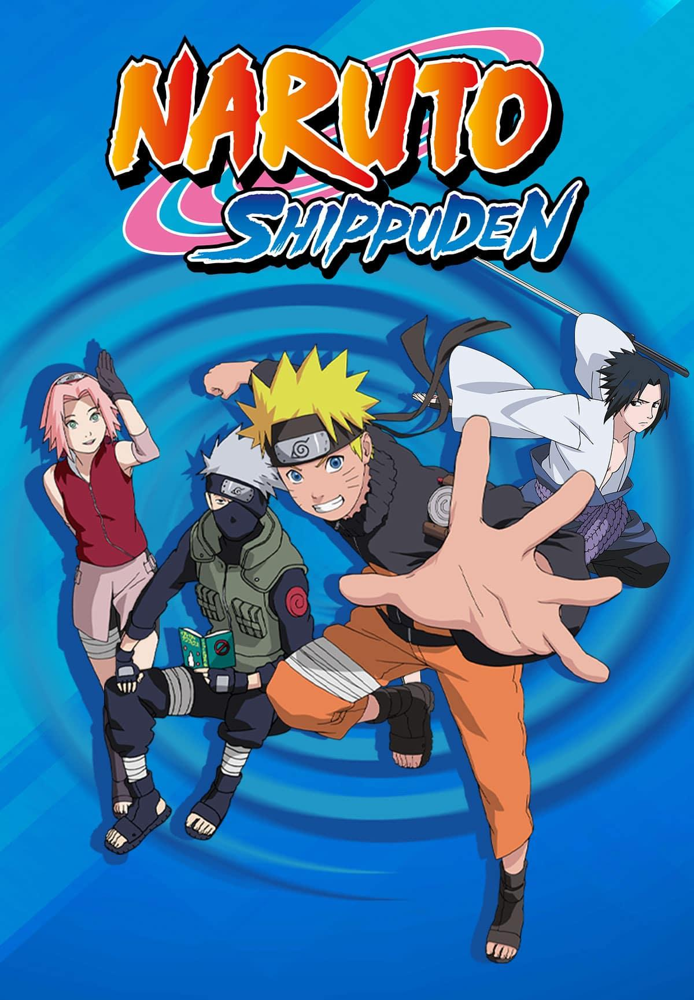

Dragon ball
Dragon Ball é uma franquia de anime/mangá criada por Akira Toriyama. A história abrange várias séries, incluindo Dragon Ball Clássico, Dragon Ball Z, Dragon Ball GT e Dragon Ball Super. Aqui está uma sinopse mais extensa, cobrindo a saga completa de Dragon Ball até os tempos atuais: Dragon Ball Clássico: A saga começa com Dragon Ball Clássico, onde conhecemos Goku, um jovem e ingênuo garoto com uma cauda de macaco que vive sozinho nas montanhas. Ele encontra Bulma, uma garota determinada a encontrar as lendárias Esferas do Dragão, que podem realizar qualquer desejo quando reunidas. Goku se junta a Bulma nessa jornada, e juntos eles encontram vários amigos e enfrentam muitos desafios, incluindo o exército da Red Ribbon, liderado pelo vilão Pilaf. Ao longo de Dragon Ball Clássico, Goku participa de vários torneios de artes marciais e aprimora suas habilidades de luta. Ele descobre que é um Saiyajin, uma raça alienígena poderosa, e enfrenta o temível vilão Piccolo Daimaoh. Goku também se casa com Chi-Chi e tem um filho chamado Gohan. Dragon Ball Z: Dragon Ball Z continua a história de Goku, agora adulto e casado. Ele descobre que é de uma raça de guerreiros poderosos conhecidos como Saiyajins e aprende sobre sua verdadeira origem. Goku enfrenta ameaças cada vez maiores, incluindo Raditz, seu irmão Saiyajin, e Vegeta, um príncipe Saiyajin orgulhoso. A série introduz a transformação lendária do Super Saiyajin, um nível de poder explosivo. Ao longo de Dragon Ball Z, Goku e seus amigos enfrentam inimigos poderosos como Freeza, Cell e Majin Boo. A história explora temas de amizade, família e superação de limites pessoais. Além de Goku, outros personagens principais, como Vegeta, Piccolo, Gohan e Trunks, desempenham papéis importantes na luta contra o mal. Dragon Ball GT: Dragon Ball GT é uma continuação não canônica de Dragon Ball Z. A história segue Goku, agora transformado em criança por um desejo das Esferas do Dragão. Ele embarca em uma jornada pelo espaço para recuperar as Esferas do Dragão perdidas e enfrenta vilões poderosos, incluindo Baby, Super 17 e os Dragões Negros. A série apresenta transformações como o Super Saiyajin 4. Dragon Ball Super: Dragon Ball Super é a continuação oficial de Dragon Ball Z e retoma a história após os eventos de Dragon Ball GT. A série apresenta um enredo mais amplo, explorando a existência de múltiplos universos e seres divinos. Goku e seus amigos enfrentam novos desafios, participam de torneios interdimensionais e lutam para proteger seu próprio universo. Ao longo de todas as sagas, Dragon Ball se destaca por suas cenas de luta emocionantes, poderes incríveis e personagens carismáticos. A franquia capturou o coração dos fãs em todo o mundo e continua a ser uma das séries de anime/mangá mais populares e influentes de todos os tempos. Dragon Ball Super apresenta novos personagens, como Beerus, o Deus da Destruição, e Whis, seu assistente. A série inclui arcos de histórias emocionantes, como o Torneio do Poder, no qual lutadores de diferentes universos competem pela sobrev
Abertura DragonBall Super
Naruto
Naruto é um anime/mangá criado por Masashi Kishimoto. A história segue as aventuras de Naruto Uzumaki, um jovem ninja da Vila Oculta da Folha, em sua busca por reconhecimento e seu sonho de se tornar o Hokage, o líder da vila. Aqui está uma sinopse mais detalhada do anime Naruto: Parte 1 - Naruto Clássico: A história começa com Naruto Uzumaki, um jovem órfão que é desprezado por sua comunidade por abrigar dentro de si uma criatura chamada Kurama, o Nove-Caudas. Naruto é determinado a provar seu valor e se tornar um ninja poderoso. Ele se juntou à equipe 7, composta por Sakura Haruno, Sasuke Uchiha e seu sensei Kakashi Hatake. Durante a Parte 1 de Naruto, acompanhamos as missões da equipe 7, suas lutas contra ninjas renegados e organizações criminosas, como o vilão Orochimaru. A história revela segredos do passado de Naruto, incluindo a verdade sobre a destruição de sua família e a conexão com o Nove-Caudas. A primeira parte termina com uma batalha épica entre Naruto e Sasuke. Parte 2 - Naruto Shippuden: A segunda parte de Naruto, chamada Naruto Shippuden, ocorre dois anos após os eventos da Parte 1. Naruto retorna à Vila Oculta da Folha após treinar com Jiraiya, um lendário Sannin. A história se concentra na luta contra a organização criminosa Akatsuki, que busca capturar todas as Bestas com Caudas. Naruto Shippuden explora temas mais maduros e sombrios, abordando a ambição, a dor e o sacrifício. A história revela mais sobre o passado de personagens importantes, como Itachi Uchiha, e aprofunda os laços entre Naruto, Sasuke e seus amigos. A série culmina em uma batalha climática entre Naruto e Sasuke, que redefine o destino do mundo ninja. Boruto: Naruto Next Generations: Boruto: Naruto Next Generations é uma sequência direta de Naruto Shippuden. A história se concentra no filho de Naruto, Boruto Uzumaki, e sua geração de ninjas. Boruto é um jovem talentoso, mas tem dificuldades em lidar com a sombra de seu pai e as expectativas impostas a ele. Boruto: Naruto Next Generations explora as aventuras de Boruto e seus amigos enquanto eles enfrentam novos desafios, incluindo a ameaça de um grupo chamado Kara. A série aborda temas de amizade, família e a busca pela identidade própria de Boruto, enquanto também continua a desenvolver os personagens e o mundo ninja estabelecidos em Naruto. Naruto é conhecido por sua narrativa cativante, personagens complexos e sequências de ação emocionantes. A franquia conquistou uma base de fãs dedicada em todo o mundo e continua a ser uma das séries de anime/mangá mais populares e influentes da história.
Abertura Naruto (classico)
One piece

One Piece é um anime/mangá criado por Eiichiro Oda. A história acompanha as aventuras do pirata Monkey D. Luffy e sua tripulação, os Chapéus de Palha, em busca do tesouro lendário conhecido como One Piece. Aqui está uma sinopse mais detalhada da série: Arco East Blue: A história começa com a jornada de Luffy, um jovem com poderes de esticamento devido à ingestão da Fruta do Demônio, em busca de um navio e de companheiros para formar sua tripulação. Ele conhece Zoro, um espadachim habilidoso; Nami, uma talentosa navegadora; Usopp, um atirador habilidoso; Sanji, um chef talentoso; e muitos outros personagens carismáticos. Luffy e os Chapéus de Palha exploram o East Blue, enfrentando diversos vilões, como piratas e agentes do Governo Mundial. Ao longo desse arco, eles enfrentam inimigos poderosos, como o Capitão Kuro, o agente do Governo Mundial, Capitão Morgan, e a traiçoeira pirata Arlong. Arco Alabasta: A tripulação dos Chapéus de Palha viaja para Alabasta, um reino no deserto, onde encontram a princesa Vivi e se envolvem em uma guerra civil. Luffy e seus amigos enfrentam a organização criminosa Baroque Works e seu líder, Crocodile, em uma batalha épica para proteger o reino Arco Skypiea: Os Chapéus de Palha chegam a Skypiea, uma ilha flutuante habitada por pessoas que acreditam na existência de Deus. Luffy e sua tripulação enfrentam desafios em uma aventura que envolve deuses, piratas e uma antiga civilização perdida. Arco Water Seven e Enies Lobby: Nesse arco, os Chapéus de Palha chegam a Water Seven, uma cidade de construtores de navios. A tripulação enfrenta problemas internos quando o navio deles, o Thousand Sunny, é destruído. Eles também se envolvem em uma batalha contra a organização criminosa CP9 para resgatar Nico Robin, uma arqueóloga e membro da tripulação. Arco Marineford e Pós-Guerra: Nesse arco emocionante, Luffy e os Chapéus de Palha se envolvem em uma guerra contra a Marinha para salvar Ace, o irmão de Luffy. A batalha ocorre na ilha de Marineford e tem consequências significativas para o mundo de One Piece. Arco Dressrosa e Além: Luffy e seus amigos embarcam em uma aventura na ilha de Dressrosa, onde enfrentam o temido vilão Doflamingo. A história continua a se expandir com novos personagens, reviravoltas surpreendentes e revelações sobre o passado de vários personagens. One Piece é conhecido por sua narrativa épica, personagens memoráveis e um mundo vasto e detalhado. A série aborda temas de amizade, determinação, coragem e a busca pelos sonhos. Com sua mistura de ação, comédia, drama e aventura, One Piece conquistou uma base de fãs dedicada em todo o
Abertura One Piece